Belt with Undercarriage, Ground Contact Point Cloud
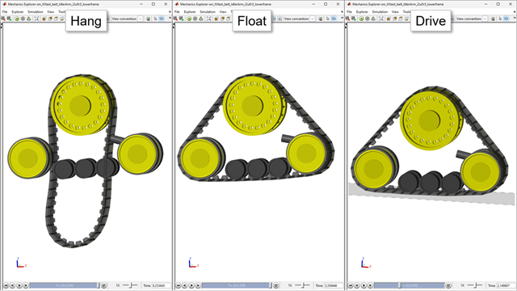
(return to Tracked Vehicle Model with Simscape Overview)
This example models a single belt from a tracked vehicle with a rubber belt. The components of the track (belt, undercarriage, contact forces) are exposed to permit modular testing of component interactions. The model can be configured as :
- "Hang" - the belt contacts the sprocket only
- "Float" - the belt contacts all undercarriage elements, but is held above the ground
- "Drive" - the belt contacts all undercarriage elements and can drive on a flat surface
The sprocket is driven with a flexible driveshaft.
Contents
Model
In this example, the belt and undercarriage components are modeled. Contact forces can be enabled or disabled to test interactions between different components.
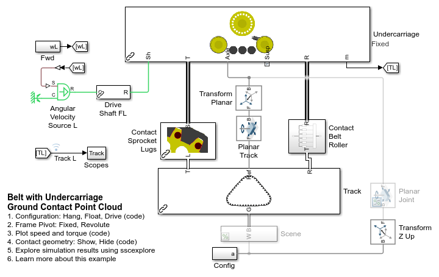Contact Forces
The model is composed of the undercarriage and the belt segments connected into a loop. The undercarriage contains the rollers, sprocket, and two idlers. Everything is rigidly attached to the frame except one idler which is attached to an arm which is pushed against the belt to hold it in tension. These exert forces on the belt through two sets of contact forces.
1. The belt lugs press against the sprocket spokes
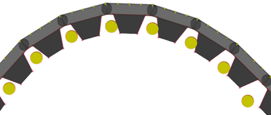
2. The belt carcass rolls along sprocket and roller surfaces
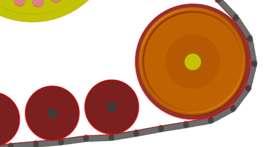

The Planar Track joint positions one of the belt lugs at a gap between the sprocket pins which is positioned facing straight down. Joint targets applied to the track segments helps it to mesh with other pins on the sprocket and loosely wrap around the rollers and idler. The block Transform Half Seg Angle orients the interface frame so that the two chain segments attached to that pin will wrap around the sprocket.
Rollers Subsystem
This subsystem models the rollers, idler, and sprocket. They each can rotate around shafts attached to the lower frame. A spring is included in the Prismatic Tensioner joint that pushes the idler against the chain to maintain tension.
The sprocket joint interfaces to 1D mechanical rotational port. This represents a mechanical shaft connection to the sprocket. It can be attached to Simscape models of gears, hydrostatic transmissions, and electric motors.
The bus of connections at port R contains the connections to the geometry that is used to model contact between the rollers, idler, and sprocket to the chain.
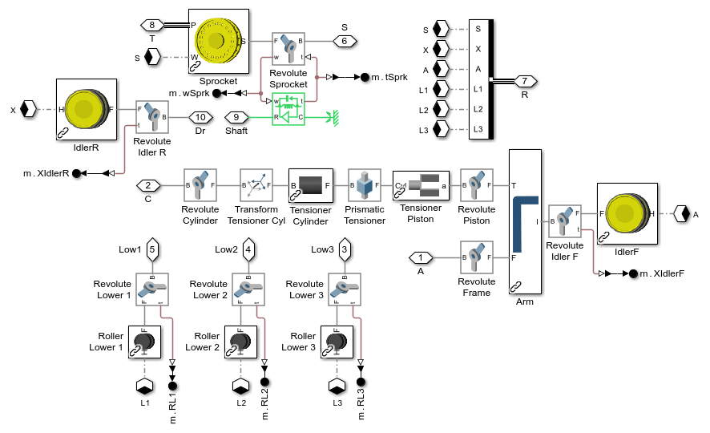Track Subsystem
A set of track segments are joined using Revolute Joints to model the track. The joints are contained in each segment. Joint targets are assigned in the mask to ensure the track meshes with the sprocket and wraps loosely around the rollers and idler.
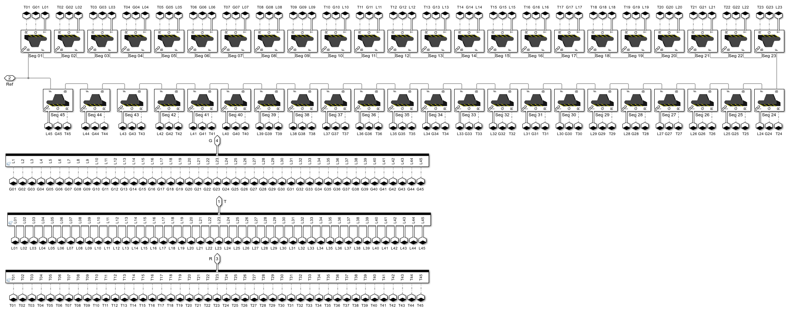Belt Segment Subsystem
Each belt segment is composed of the carcass and lug. To streamline the contact force calculation, simpler geometry is connected to the Spatial Contact Force block.
- Disk geometry is used to model the pins in the sprocket.
- Line Segment geometry are used to model the lugs and inner carcass surfaces.
- Point Cloud geometry is used to model the outer carcass surface.
The point cloud for the belt-ground contact is parameterized, so the point locations and density can be varied.
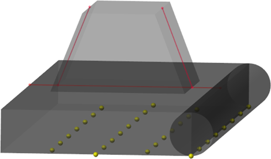
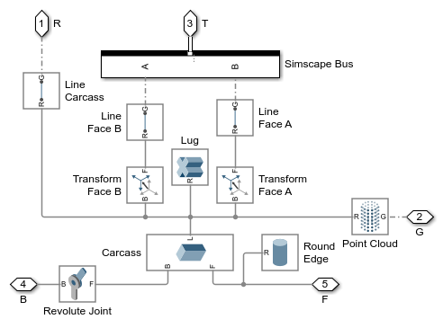Simulation Results: Hang Test
Below are the simulation results from a test where the belt hangs from the sprocket. Contact forces with the idlers and rollers are disabled. The simulation only tests contact between the sprocket spokes and lugs plus sprocket and carcass. A joint holds the frame above the ground.
Elapsed Sim Time = 73.9843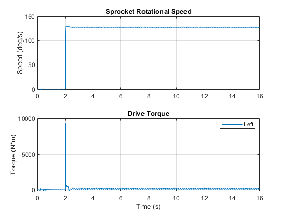
Simulation Results: Float Test
Below are the simulation results from a test where the track floats in the air. All contact forces between the belt and internal components are enabled. Contact forces between the belt and the ground are disabled. A joint holds the frame above the ground.
Elapsed Sim Time = 326.4995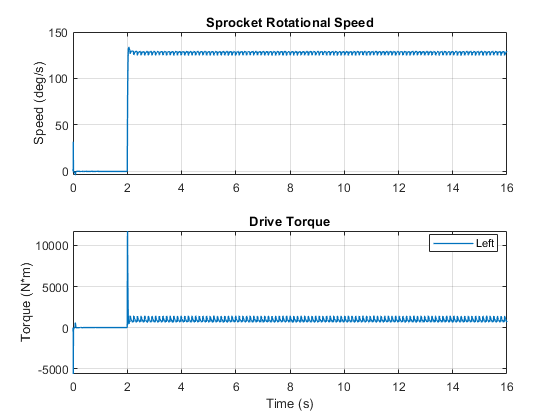
Simulation Results: Drive Test
Below are the simulation results from a test where the track drives along a flat surface. All contact forces between the belt and internal components are enabled. Contact forces between the belt and the ground are enabled. A planar joint permits the grack to only move within the global X-Z plane.
Elapsed Sim Time = 259.355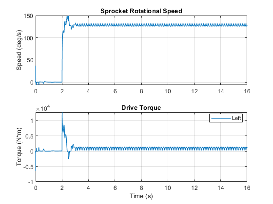